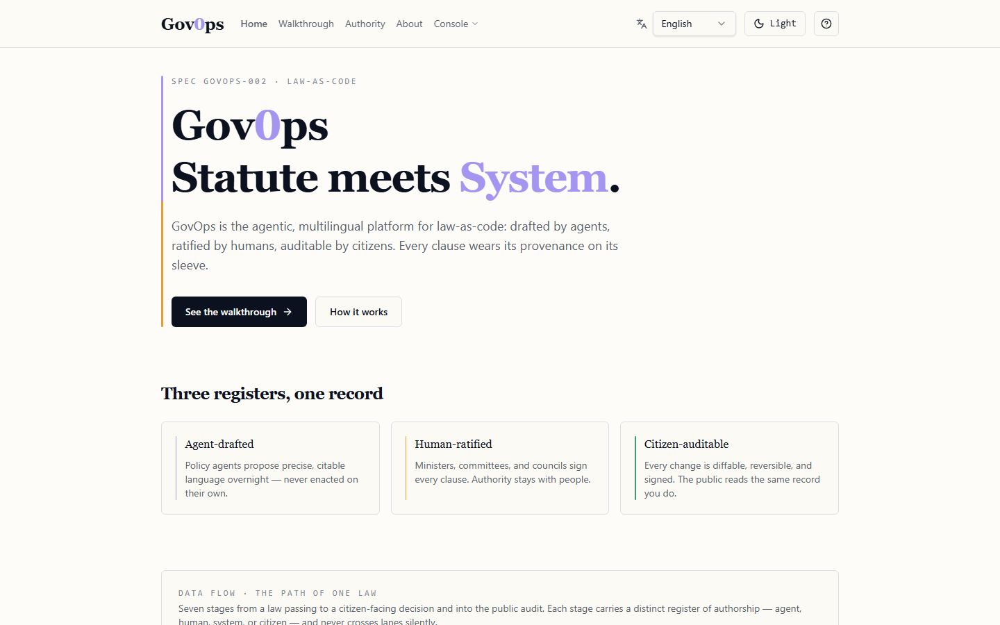
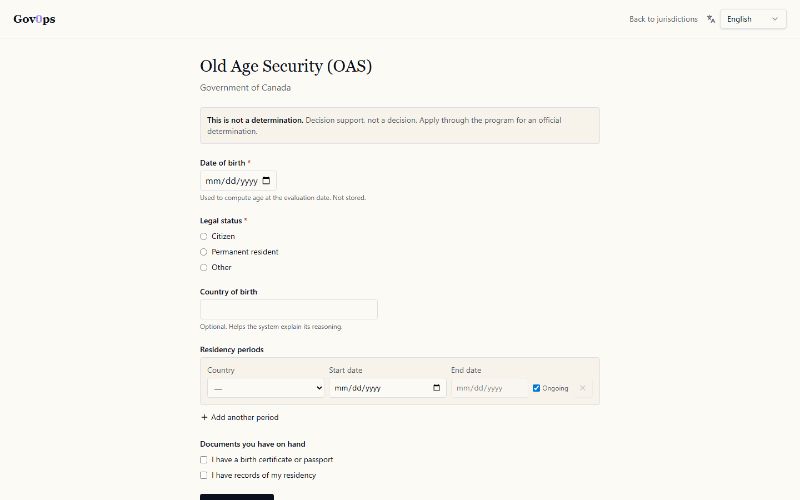
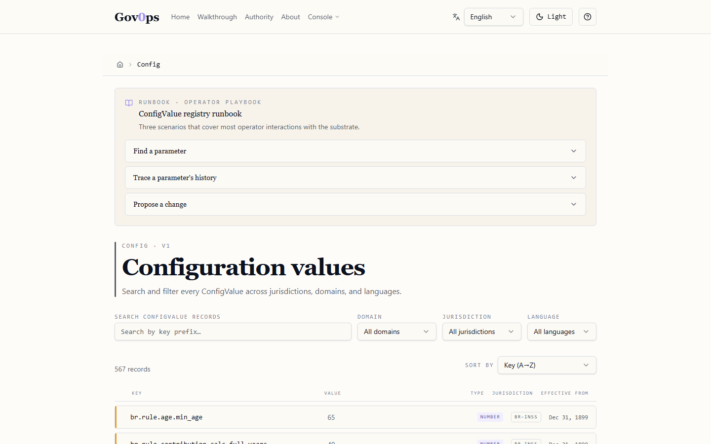
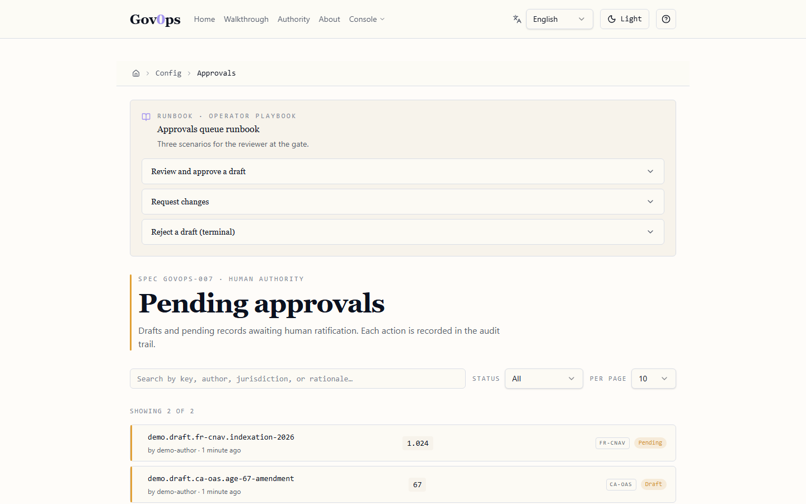
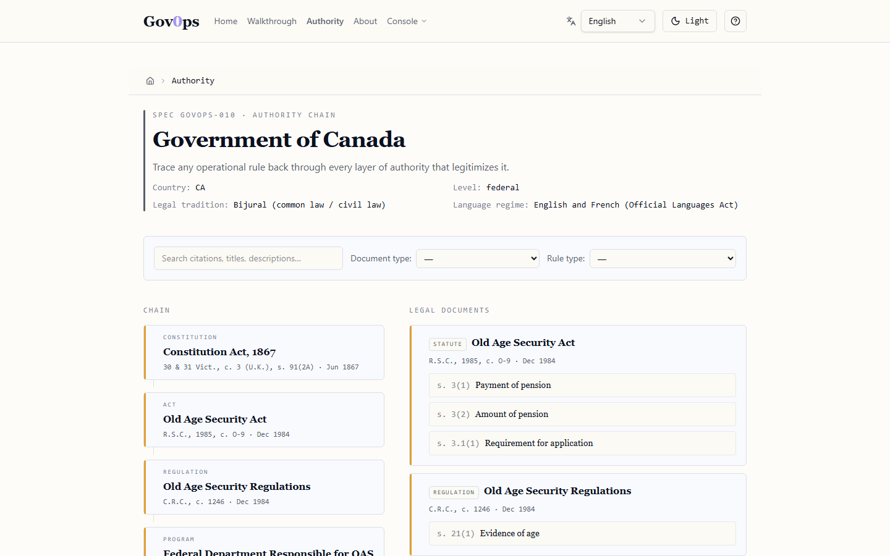
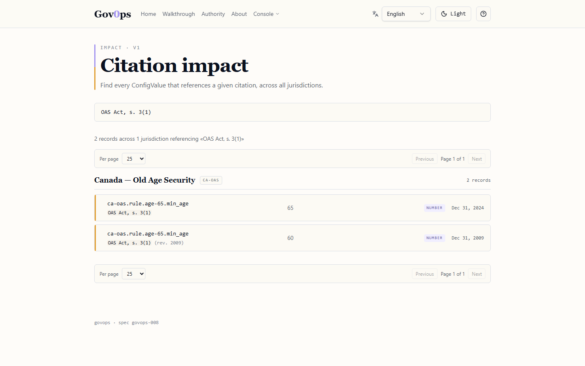
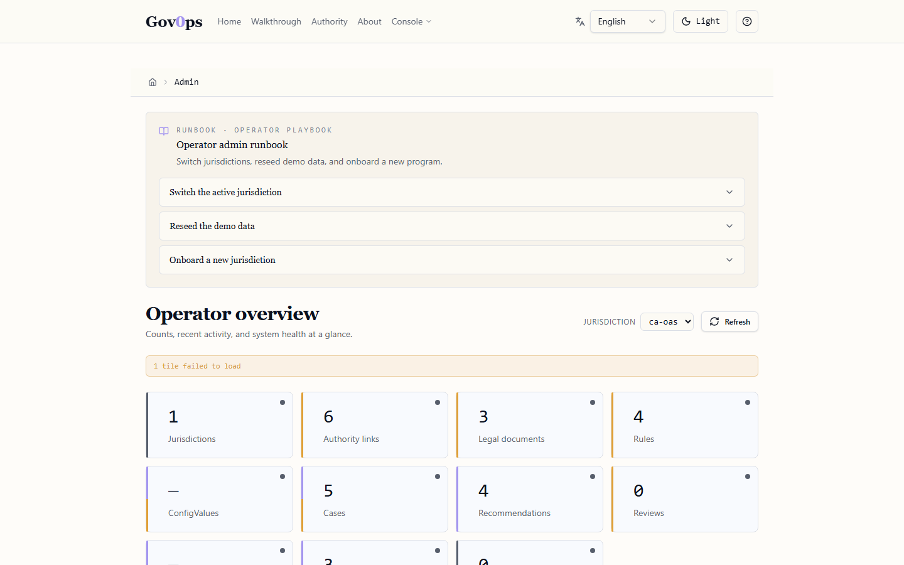
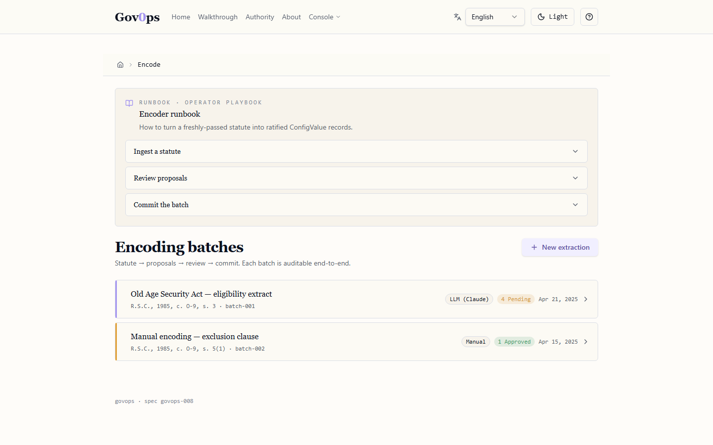
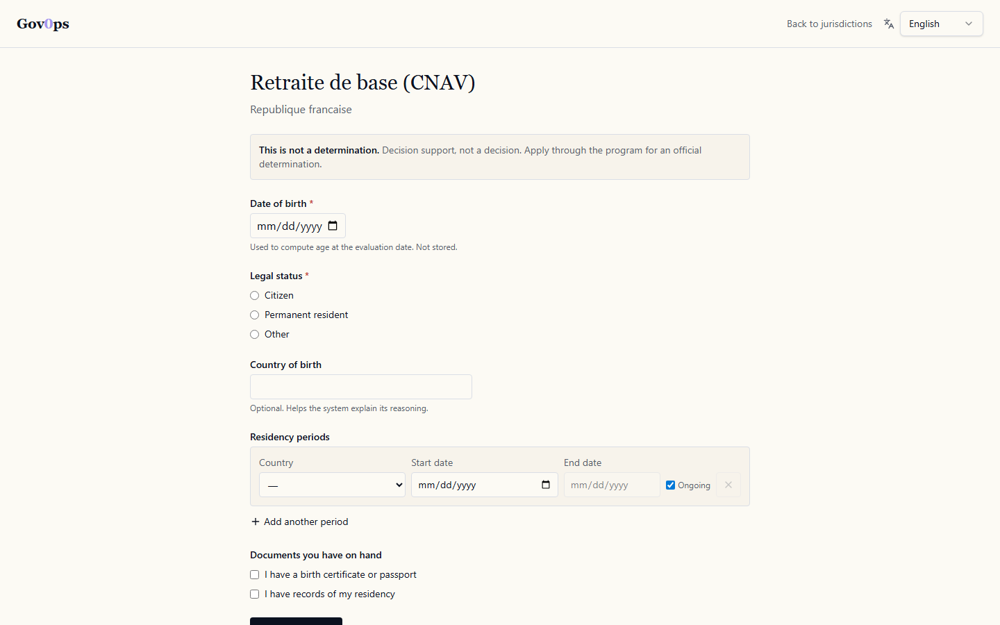

agentic-state GitHub organization is an independent implementation effort whose name signals framework alignment, not authorship or endorsement. Legislative text is publicly available law interpreted by the author for illustrative purposes only — not authoritative operational guidance.
GovOps is an open public-good reference implementation of Law as Code: legislation translated into deterministic, auditable, jurisdiction-aware software with full provenance from decision back to source authority. Behaviour changes are configuration writes, not deploys. A case evaluated against 2025 still resolves with 2025's substrate after the rules change in 2026.

GovOps is a working MVP demo other contributors can fork to build whatever else they need — not a production multi-tenant platform. Five entry points:
| Audience | What you get |
|---|---|
| Policy / legal team |
Configure-without-deploy. Change a statutory threshold by drafting a new dated ConfigValue record with citation + rationale. Dual approval. Full audit. Effective dates honour the statute's calendar, not yours.
→ docs/design/LAW-AS-CODE.md |
| Citizen |
Self-screen for a benefit. Estimate eligibility without creating a case, without storing PII, without an audit row. The citizen sees the same rule trace the officer would see.
→ See the /screen route |
| Auditor |
Every recommendation traces back. Decision → Rule → ConfigValue → Citation → Authority → Jurisdiction, with the exact substrate values that were in effect on the evaluation date.
→ /api/cases/{id}/audit |
| Government / contributor |
Fork the repo, drop in your jurisdiction's YAML, run. Seven reference jurisdictions × six locales already shipped. Adding an eighth costs one YAML tree + one Python registration + four demo cases.
→ CONTRIBUTING.md |
| Researcher / SPRIND-curious |
A working reference against the SPRIND "Law as Code" framework's five elements, plus a sixth GovOps adds (the interpretive apparatus — including LLM prompts — is itself versioned configuration).
→ SPRIND mapping |
Screenshots below are PNGs captured by Playwright against the live v0.4.0 dev server (Vite + TanStack + shadcn, parchment-on-ink theme). Click any image to see it full-resolution.








Every parameter the engine resolves — age threshold, residency minimum, accepted statuses, calculation coefficients, UI labels, even the LLM prompts — lives as a dated ConfigValue record under lawcode/. The engine queries resolve(key, evaluation_date, jurisdiction_id) instead of reading a constant. Old evaluations stay reproducible because the substrate is dated, not destructive.
SPRIND's "Law as Code" initiative names five foundational elements for digital legal infrastructure. GovOps implements all five and adds a sixth that SPRIND does not yet articulate. Full element-by-element code mapping in docs/design/LAW-AS-CODE.md.
JSON Schema for ConfigValue records and lawcode/ file shape; CI gate rejects malformed YAML.
Working editor for the legal code: search, timeline, diff, draft, dual-approval, prompt admin.
Statute text in → candidate rules out (LLM-assisted) → human review → commit-ready YAML.
Versioned lawcode/ tree per jurisdiction; federation lets a second repo publish a peer jurisdiction with Ed25519 signing.
Implementation guide, training curriculum, certification program, RFP template, partner program — all Apache 2.0, all forkable.
The prompts the AI uses, the labels operators read, and the engine thresholds are themselves dated ConfigValue records — same schema, same approval flow as the rules. The interpretive layer is configuration, not code.
Sorted by return on effort. Adding a jurisdiction is the highest-value contribution; native-speaker translation review is the most accessible to non-developers. Full guide in CONTRIBUTING.md.
| Path | Effort | Skills | Start here |
|---|---|---|---|
| Add a jurisdiction (new country) | ~1 day | Domain knowledge of one country's benefit law | Issue template |
| Second program in an existing jurisdiction | ~1 week | Domain knowledge of a non-pension benefit | Issue template |
| Native-speaker i18n review | ~1 hour per locale | Native fluency in fr / pt-BR / es-MX / de / uk | Issue template |
| Add a rule type to the engine | ~1 day | Python + tests | CONTRIBUTING § engine |
| Federate a peer repo with its own jurisdiction | ~1 week | Python + Ed25519 signing | ADR-009 |
Embedded SQLite, no cloud, no API keys. Backend serves a Jinja UI on port 8000; the modern TanStack web UI runs on port 8080.
# Backend (Jinja UI + JSON API) git clone https://github.com/agentic-state/GovOps-LaC.git cd 61-GovOps pip install -e ".[dev]" govops-demo # http://127.0.0.1:8000 pytest -q # 375 tests # Modern web UI (Vite + TanStack + shadcn — the surface most contributors should use) cd web && npm install && npm run dev # http://localhost:8080
{kind=link}
{kind=link}
{kind=link}
{kind=link}
{kind=link}
{kind=link}
{kind=link}
{kind=link}